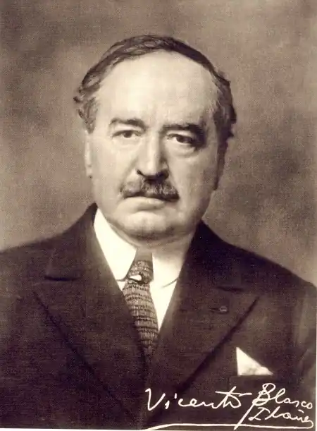
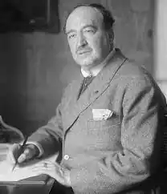
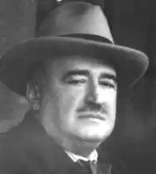

Бласко Ібаньєс Вісенте (Blasco Ibanez, Vicente — 29.01.1867, Валенсія, Іспанія — 28.01.1928, Ментона, Франція) — іспанський прозаїк.Народився 29 січня 1867 р. у Валенсії в міщанській родині. Зарекомендував себе як активний діяч лівого республіканського руху: з 1898 по 1909 pp. був депутатом парламенту від партії республіканців, брав активну участь у суспільно-політичному житті країни. "Починаючи з 1891 p., — згадував письменник, — моє життя було сповнене всіляких пригод: нерідко був учасником небезпечних змов і пропагандистських поїздок, мітингів і судових процесів. Досить часто я сидів у в'язницях — дні, тижні, а то й місяці. Можу сказати з певністю, що третину цього героїчного в моєму житті періоду або був ув'язненим, або рятувався втечею за кордоном. Мене заарештовували разів з тридцять".
Розчарувавшись у політичній діяльності, в 1909 р. Бласко Ібаньєс склав із себе депутатські повноваження і того ж року відправився у Південну Америку. Там він планував виступити з публічними лекціями у кількох латиноамериканських країнах, але натомість оселився в Аргентині, де організував для корінного населення сільськогосподарський кооператив ім. М. де Сервантеса. Втім, "експеримент" виявився невдалим, і в 1914 р. письменник повернувся в Іспанію. Після захоплення у 1923 р. влади в країні генералом П. де Ріверою, Бласко Ібаньєс емігрував у Францію, де очолив антимонархічну групу, що розгорнула політичну кампанію, спрямовану проти диктатора. Помер письменник 28 січня 1928 р. у французькому містечку Ментоні.
Літературний дебют Бласко Ібаньєса відбувся на поч. 90-х pp. XIX ст. У перших прозових спробах письменника поєдналися натуралістичні та реалістичні тенденції. Упродовж 1894—1902 pp. Бласко Ібаньєс створив "валенсійський цикл" романів, в яких відтворив побут та звичаї рідної для нього провінції Валенсії: "Безтурботне життя" ("Arroz у tartana", 1894), "Травнева квітка" ("Flor de mayo", 1895), "Хутір" ("La barraca", 1898), "В апельсинових caдаx"("Entre naranjos", 1900), "Намул і очерет" ("Canas у barro", 1902) та ін. Уже в цьому циклі творів він вийшов далеко за межі вузько регіонального, характерного для "обласної" літератури, підходу, намагаючись порушувати соціально-економічні та політичні проблеми, характерні для всього іспанського суспільства. Новий період творчості Бласко Ібаньєса відкрив цикл його соціально-тенденційних романів, створених на початку 1900-х років: "Непроханий гість" ("Elintruso", 1904), "Винний склад" ("La bodega", 1905) та ін. Як стверджував письменник: "Усі ці книги я писав щиро та захоплено. Ми саме пережили тоді колоніальну катастрофу. Іспанія опинилася в принизливому становищі, і я різко виступив проти деяких проявів сонного животіння нашої країни, сподіваючись, що це спричинить якусь реакцію у відповідь...". Центральне місце в усіх цих романах займає народ, який починає усвідомлювати своє право на свободу і більш гідне життя. У новому циклі романів, створених упродовж 1906—1909 pp. ("Маха гола" — "La maja desnuda", 1906; "Кров і пісок" — "Sangre у arena", 1908; "Мертві наказують" — "Los muertos mandan", 1909), письменник звернувся вже до зображення долі окремої людської особистості. Головний конфлікт цих романів зумовлений суперечностями, що виникають між обдарованою молодою людиною і несправедливо влаштованим суспільством. У філософсько-психологічному романі "Маха гола "відображений конфлікт із суспільством і самим собою художника Реновалеса, який змушений малювати картини на замовлення багатіїв, але мріє створити свою "Маху голу" — аналог знаменитої однойменної картини Ф.Гойї, на якій зображена оголена аристократка, котра вдає з себе маху, мадридську простолюдинку. Її оголеність для Гойї — виклик пуританській релігійній моралі; для Реновалеса така картина символізує вихід за межі міщанських забобонів, є виявом його мистецької свободи. Але до кінця реалізувати свій намір героєві так і не вдається. У психологічному романі "Кров і пісок" Бласко Ібаньєс намагається позбавити героїчного ореолу матадорів, стверджуючи, що корида — це лише один із засобів правлячої влади відвернути увагу народу від його злиденного становища і спрямувати її у безпечніше русло. До значних здобутків пізньої прози Бласко Ібаньєса відносять також романи "Чотири вершники Апокаліпсису" ("Los cuatro jinetes del Apocalipsis", 1916), "Його морська святість" ("El papa del mar", 1925), "Біля ніг Венери" ("A los pies de Venus", 1926) та ін.